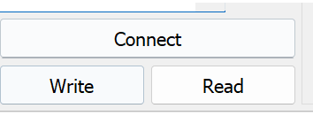
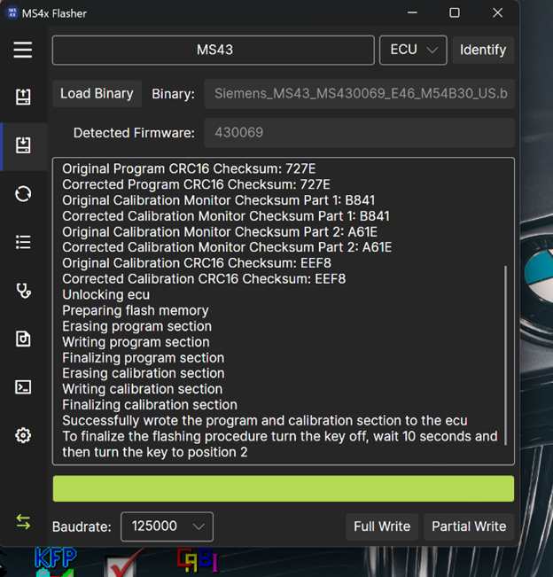
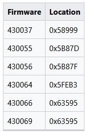
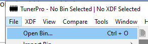
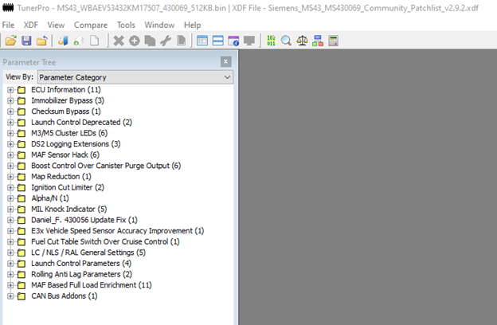
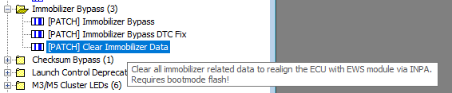
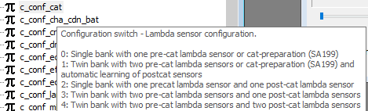

IS-4543-ON1
Milestone 4- Flashing Firmware
Idea #2: Recode BMW car data to enable/disable different features. It can also expand further to create an environment for engine tuning.
Milestone #4: Reflash the vehicle with new firmware and tune updated firmware files.
Summary of Activities:
To begin tuning your BMW, you’ll first need to create a backup of your current ECU data. This can be done using JMGarage to read the ECU in boot mode.
Entering boot mode requires disassembling the ECU and shorting pin 104 of the C167 processor, which enables boot mode and allows the ECU to be read. To supply power and enable data communication, pins x60001 and x60004 need to be connected, providing 12V power and activating the K-Line for reading data. If the process is performed in the vehicle, the first and fourth plugs from the ECU harness must be connected to the exposed ECU. While these harness connections also power the CAN-bus low and high auxiliary functions, these are not needed during the boot mode read.
Once a complete clone of the ECU data is created, it should be saved securely. This backup ensures the vehicle can always be restored to its original state, regardless of modifications made later. This process is specifically applicable to Siemens MS43 ECUs.
With the backup in place, you can begin flashing the ECU using the Ms4x Flasher. This tool updates the ECU firmware while maintaining the integrity of its sensitive data. Once the firmware is updated, the ECU can be modified using definition files, unlocking extensive tuning options.
Examples of potential modifications include removing the EWS immobilizer system, deleting rear O2 sensors, performing manifold swaps, adjusting ignition timing, modifying rev limits, and fine-tuning throttle response. These adjustments allow for significant customization and optimization, tailored to specific performance goals. This module will provide further details on these tuning options and how they can enhance your vehicle’s capabilities.
Description of events:
Items needed:
· Battery charger
· Copper wire (for ground)
· Laptop
· Jmgarage
· Tunerpro
· Torx bits & Allen bits to remove ECU
The ECU on most BMW’s is located on the driver’s side located near the firewall under the hood. To remove the ECU cover remove 3 Allen bits need to expose the ECU.
Before handling the ECU, it’s best to unplug the negative ground to the vehicles battery to prevent any shorts.
Carefully remove the ECU without tearing any wires from the wiring harness, then remove all the plugs from the back of the ECU.
Only 4 Torx bits lightly hold the ECU together, then remove the cover housing the mother board.
Place the bottom of the ECU on the same ECU case and expose the C167 processor.
Now we are ready to Plug in adapters pins x60001 and x60004 from the wiring harness and begin the boot-mode process.
Figure: ECU exposed and pins x60001 and x60004 connected
Before we begin, we must power the vehicles’ battery, then use a battery charger to ensure the vehicle stays above 12V through out the read.
Figure: Battery charger connected to power and ground.
Once we have power, we can now connect a copper wire long enough to reach a ground on the vehicle to the C167 processor.
For this example, I connected the copper wire to the same ground being used by the battery charger, so I could use the clamp from the charger to ensure a secure ground.
The other end of the copper wire must have a strand small enough to touch the pin 104 of the processor.
Figure: ECU exposed with copper wire ready to ground the C167 processor into boot-mode
Now that we have everything set up properly, you will need a second person to help you power the vehicle and allow you to short pin 104.
Pin 104 is located 5 solders up on the processor, as shown pinpointed in the picture below.
Figure: pin 104 on the C167 processor
Once you have the copper wire on pin 104, the vehicle ignition can be set to position 2, to allow power to the ECU.
Hold the copper wire on pin 104 for 10 seconds, then remove the wire while leaving the car running.
The vehicle should now be in boot-mode.
Using JMGarage, select the connect option.
Figure: successful connection using JMGarage
Now that we have a successful connection using boot-mode we can select ‘read’ to acquire a complete clone of the ECU data.

Figure: Option to Read in JMGarage
Figure: Failed read attempt
My first attempt I received an error early on during the read. The read shows the hex dump where the error occurred.
The error shows “Error while read flash. Wrong echo answer”
After a couple of troubleshooting attempts and receiving the same error, I concluded that the problem was due to the latency of the K-DCAN cable.
From previous reads using Ms4x flasher, the cable was set to a latency of 1ms.
Stated on the Ms4x wiki for JMGarage, when doing a boot-mode flash, the cable must be set to 16ms.
Once this setting is changed in device management advanced settings, we can proceed to read the ECU correctly.
Figure: Successful read connection.
Once the latency issue was corrected, a read was successfully completed.
Figure: Option to save binary
Using the save option we can store this file in a safe space.
Figure: Location for full read 512KB flash file
Now that we have a safe backup, we can use ms4x flasher to update the firmware and begin modifying with Tunerpro.
Download a fresh firmware from Ms4x wiki.
Remember to select the correct version for your e46. In this example I am using a m54B30 US spec 3 series engines.
Figure: https://www.ms4x.net/index.php?title=Firmware_Files
Once we are ready with the new firmware version 0069, we can connect the vehicle to a battery charger and connect the K-DCAN cable to the laptop and set the ignition to position 2
Now that we have an ODDII connection we can begin our flash
Open Ms4xFlasher and select the option to load binary
Select the freshly downloaded 0069 firmware update
Figure: 0069 firmware update being loaded into Ms4x Flasher
Select full write
Once the flash is complete, power off the vehicle and allow 10 seconds before starting again.

Figure: successful Full Write flash of the 0069-firmware update binary.
As stated in the Ms4x Flasher, to finalize the flashing procedure, turn the key off and wait 10 seconds then turn the key to position 2.
Now that we have a working updated vehicle, we can store a full flash version of the .bin file with Ms4xFlasher and store it in a safe place. (separate from JMGarage flash)
Figure: Full read using Ms4x Flasher of new 0069-firmware associated with my vehicles VIN

Figure: updated full read 512kb file created using Ms4x Flasher
*Note never flash a ms4x full flash using boot-mode with JMGarage. This will cause the boot header of the Ms4x .bin to override the full flash of JMgarage which includes sensitive ECU data such as vin numbers. Bootmode flashing is only needed when you want to virginize the ECU and re-adapt it to an EWS module, such as putting an ECU in a completely different car.
To begin tuning with TunerPro, we now can do a partial read with Ms4xFlasher and load it into Tunerpro with the correct definition file and patch list file.
*The 0069-firmware update was necessary to be able to use the updated definition and patch list files.
Tuner pro is a very powerful tool that allows the user to manipulate any data table that is stored in a vehicles ECU, all the way down to CAN bus byte values.
This means theoretically anything is possible when it comes to tuning your vehicle, so extreme caution should be taken when manipulating any data tables.
Ms4x Wiki is a great resource for guides on how to get a starting point in tuning your vehicle, gives examples for both tuner pro, as well as viewing the binaries in a hex editor.
To begin tuning in TunerPro we will need to have our definition files and patchlist files ready for use.
The definition file is only used to translate the hex data dumped from the ECU into a human readable form. With the correct knowledge tuning can be done using a hex editor of your choice.
For example, you can disable CRC16 checksum using a hex editor by
1. Set Word at 0x73FFE to 0xFFFF
2. Set Byte at 0x6FFB0 to 0xA8
3. Change the Byte in the table from 0x84 to 0x94

Figure: Firmwre byte location
Depending on your firmware version, the location of the bytes will be different.
In BMW ECU’s, checksums play a role in ensuring data integrity and system integrity, it allows the system to detect errors or unauthorized modifications. Disabling this checksum is desired by engine tuners whose goal is to push an engine to its maximum limits.
Now that we have an understanding, we can open Tunerpro and select our binary file.

Figure: Open Bin option
Figure: 512kb binary location
When selecting your bin files, it is important to know what you are attempting to modify.
For this example, we will modify the EWS, so the 512kb file will be needed to modify and reflash the vehicle.
Removing the EWS system or the immobilizer can be useful in many ways. Lots of older BMW’s may have the EWS go out of sync, meaning that the car will no longer start because the ECU does not recognize the key’s transponder chip code which is no longer in the vehicles database.
For an average driver, a problem like for an old daily driver may cause them to sell the car. You will need to find someone who can diagnose and repair the EWS module and pay them around $300 or take the vehicle to a BMW dealership that will charge anywhere from $1000- $2000.
In most cases, someone who is deleting the EWS is doing so because the vehicle is a track car, and minimal risk such as avoiding your vehicle not responding to your key, is crucial when spending hours on a racetrack.
Next select the XDF patchlist to easily patch out the immobilizer.
Figure: Open XDF
Figure: XDF Patchlist file
Figure: Parameter Category option
By default, it will be set to Parameter Type, view by Parameter Category to have a clear view of the folders.

Figure: Community patch list options
To remove the immobilizer, we can see the Immobilizer bypass folder
Figure: Immobilizer Bypass Folder
Figure: Immobilizer Bypass Patch
Figure: Immobilizer Bypass DTC fix Patch

Figure: Clearing Immobilizer Data
By hovering over the options, we can see a description of what the patch is doing.
To Disable the EWS we can patch the first and second option to bypass the immobilizer checks and fix the DTC 128 code that pops up when the immobilizer is bypassed.
The third option clears all immobilizer data related to the ECU essentially viginizing the ECU, which will allow you to repair a DME and resynchronize it with the EWS, in the case of it being out of sync, or a new DME is being installed in a vehicle.
To complete this process, you will patch the files using TunerPro, then flash the vehicle in Boot-mode using JMgarage, then resync the DME to the EWS using INPA, a straightforward process once set up.
Figure: Apply Patch
We can select Apply Patch, then apply to complete the patch process in a desired table.

Figure: Patches applied
Once complete, you can reselect the tables to confirm the Immobilizer has been patched successfully.
Now we can save the file and indicate the changes made for simplicity and save it in a desired location

Figure: Save location
We now have successfully created a patched bin file for an EWS delete.
This file can now be loaded back into Ms4x Flasher and a full write can be done
Cycle the power and wait 10 seconds, and your vehicle is now tuned with a EWS delete, meaning your ECU will no longer check for a signal from the EWS to start the vehicle.
There are many more options in the community patch list that are very desirable from people in the tuning community, such as launch control, and Ignition cut limiter.
Figure: Launch Control Parameters
Launch control can be controlled to limit the RPM limiter when the clutch is pressed. This will allow a vehicle to launch from a stand still and not spin the tires into a burnout.
This is important in many race car applications. It also gives a cool limiter sound at a lower RPM.
Figure: Ignition Cut Limiter description
Adjusting the Ignition Cut Limiter is a popular option in the tuning community because it gives the vehicles the pops and bangs that the kids love.
In a professional setting tuning the ignition cut limiter is important to control the RPM limit by temporarily disabling the ignition rather than fuel injection. This method in a racing application allows for quicker recovery and a more aggressive sound when the RPM limit is reached.
The unburnt fuel from the ignition cut is expelled into the exhaust where it can ignite and cause pops, bangs, and flames.
Using a perfected tune, you will have minimal pops and if your vehicle is set up properly, it will expel the excess fuel into the exhaust as flames, causing a very cool effect you normally see in movies.
Remember when tuning the ignition cut limiter it is extremely important to understand what you are doing. Doing this to a stock vehicle will cause you to damage your entire exhaust system with unburnt fuel being ignited into your catalytic convers. This will damage your entire engine and exhaust system as stated in the description.
It is recommended to have new or upgraded ignition coils, as the ignition cut limiter tune will put more stress on the coils and center sprocket.
An ideal setup would have a catless exhaust all the way through, preferably 3in diameter, secondary air pump delete since we are removing the catalytic converters, and post cat O2 sensor delete.
This will remove all restrictions in the stock exhaust system.
The patch list gives an option to Patch the ignition cut limiter implementing a basic ignition cut where the engine speed hard limiter changes the ignition coil to zero. This can be further modified using the definition file and following the guide on MS4x wiki.
To manually edit tuning parameters, we will load the partial read of the ECU from MS4x flasher with the xdf definition file downloaded instead of the patchlist file.
Figure: TunerPro with partial read file and definition file
The Ignition cut can also be toggled using the AC button. Since most race cars don’t use the AC, you can set the fuel cut activation to occur when the AC is set to on or off.
This process can be manually adjusted to reach a desired outcome using TunerPro and editing your binary using a definition file.
This approach disables the trailing throttle fuel cut by raising the minimum engine speed threshold for trailing throttle fuel cut to an engine speed that the engine can't reach, this will produce continuous exhaust pops or flames when fine-tuned as soon as the throttle is lifted.
As the MS43 has two separate tables for when the AC is on or off we can use that logic to for example only activate exhaust pops when the AC is on or off.
- ip_n_min_puc__tco - Minimum engine speed for trailing throttle fuel cut activation with AC off
- ip_n_min_accin_puc__tco - Minimum engine speed for trailing throttle fuel cut activation with AC on
To tune the intensity of the exhaust pops the following ignition tables can be used.
- ip_iga_pu__n__tco - Target ignition angle in case of trailing throttle
- ip_iga_puc__n__tco - Target ignition angle in case of trailing throttle fuel cut-off
- ip_iga_accin_puc__n__tco - Target ignition angle in case of trailing throttle fuel cut-off with AC on
Figure: Tunerpro example for a starting point in ignition angle tuning
The fuel cuts can be even further modified by tuning the delay before activating the trailing throttle fuel cut in a specified gear.
With this approach it's possible to achieve a set amount of pops before the trailing throttle fuel cut is activated.
- c_t_puc_deacc_vs - Delay before activating trailing throttle fuel cut when car is stationary
- ip_t_puc_deacc_1__n__maf_mmv - Delay before activating trailing throttle fuel cut. First gear
- ip_t_puc_deacc_2__n__maf_mmv - Delay before activating trailing throttle fuel cut. Second gear
- ip_t_puc_deacc_3__n__maf_mmv - Delay before activating trailing throttle fuel cut. Third gear
- ip_t_puc_deacc_4__n__maf_mmv - Delay before activating trailing throttle fuel cut. Forth gear
- ip_t_puc_deacc_5__n__maf_mmv - Delay before activating trailing throttle fuel cut. Fifth gear
Figure: TunerPro example fir trailing fuel cut starting point
When removing the secondary air pump the ecu needs to be configured to ignore the removed sap equipment. To instruct the ecu that there is no secondary air pump installed set c_conf_sap to 1 and clear the "learned variants" adaptation in the ecu.

Figure: Secondary Air Pump delete option
The O2 sensor can be configured using the c_conf_cat function.

Figure: O2 sensor configuration settings.
As we can see, to only use a single bank with a pre cat O2 sensor we leave the value as 0
Using this guide we now have full control over our BMW’s ECU data. Tools like JMGarage, MS4x Flasher, TunerPro, and INPA allow us to modify any data in our ECU. The process begins with creating a secure backup of the original ECU data in boot mode, ensuring a safe restoration point if modifications go awry. By flashing updated firmware and leveraging tools like TunerPro with proper definition and patch list files, enthusiasts can unlock and modify critical ECU parameters to achieve specific goals, such as disabling the EWS immobilizer, optimizing ignition timing, and deleting unnecessary sensors and pumps after modifications.
Advanced tuning options like ignition cut limiters, launch control, and checksum manipulation tuning allow for greater customization. However, these modifications require a solid understanding of ECU data tables and potential impacts on the vehicle's performance and longevity. For instance, implementing an ignition cut limiter can produce desirable effects like pops, bangs, and flames but can also strain engine components without proper supporting modifications, such as upgraded ignition coils and a catless exhaust system.
Tuning processes like secondary air pump and O2 sensor delete streamline the system for track or race use while removing unnecessary restrictions that are meant to support the once installed catalytic converter system. These modifications not only enhance performance but also demonstrate the versatility of tools like TunerPro in translating and editing hex data for precise customization.
While tuning can significantly elevate a vehicle’s capabilities, it is advised to proceed with caution as a simple mistake can cause lots of headaches, if a DME becomes bricked or an engine blows up. The MS4x Wiki and community resources provide valuable guidance for safe and effective modifications, making ECU tuning an exciting and rewarding process for those seeking to push their BMW’s performance boundaries.
References
File:Siemens MS43 MS430069 Community Patchlist v2.9.2.xdf. File:Siemens MS43 MS430069 Community Patchlist v2.9.2.xdf - MS4X Wiki. (n.d.). https://www.ms4x.net/index.php?title=File%3ASiemens_MS43_MS430069_Community_Patchlist_v2.9.2.xdf
Definition files. Definition Files - MS4X Wiki. (n.d.). https://www.ms4x.net/index.php?title=Definition_Files
Siemens MS43. Siemens MS43 - MS4X Wiki. (n.d.). https://www.ms4x.net/index.php?title=Siemens_MS43